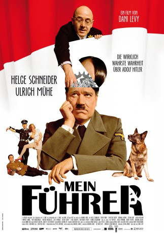

#11056 Mein Führer - Die wirklich wahrste Wahrheit über Adolf Hitler
Alternativ: My Führer (Englischer Titel)
 
 IMDB-Wertung: 5.5 / 10
IMDB-Wertung: 5.5 / 10  Metascore: 0
Metascore: 0 
The action comedy is set in 1944. Hitler appears in it as physically and mentally destroyed person who takes the advice of Goebbels in the actor-teacher of Jewish concentration camp for lessons eloquence to inspire the German people to further fight.
DVDRIP
Jahr: 2007
Dauer: 91 Minuten
FSK: 12
Land: Deutschland Studio: X Verleih AGTonspuren:
Untertitel:
Auflösung: SD (712x388) Größe: 1116 MB
Genre: Drama, Komödie, Krieg
Regisseur: Dani Levy
Drehbuch: Dani Levy
Soundtrack: Niki Reiser
Darsteller:
 Ulrich Mühe als Adolf Grünbaum
Ulrich Mühe als Adolf Grünbaum Sylvester Groth als Joseph Goebbels
Sylvester Groth als Joseph Goebbels Stefan Kurt als Albert Speer
Stefan Kurt als Albert Speer Ulrich Noethen als Heinrich Himmler
Ulrich Noethen als Heinrich Himmler- Victor Schefé als Rottenführer Puffke
- Wolfgang Becker als KZ-Kommandant Banner
 Matthias Matschke als KZ-Wachmann
Matthias Matschke als KZ-Wachmann Ilja Richter als Kurt Gerheim
Ilja Richter als Kurt Gerheim Katja Riemann als Eva Braun
Katja Riemann als Eva Braun Meret Becker als Sekretärin
Meret Becker als Sekretärin Adolf Hitler als Himself (archive footage) (uncredited)
Adolf Hitler als Himself (archive footage) (uncredited)- Britta Horn als Telefonistin (uncredited)
 Helge Schneider als Adolf Hitler
Helge Schneider als Adolf Hitler- Adriana Altaras als Elsa Grünbaum
- Lambert Hamel als Obergruppenführer Rattenhuber
- Udo Kroschwald als Martin Bormann
- Torsten Michaelis als SS-Wachmann Moltke
- Axel Werner als Erich Kempka
- Lars Rudolph als Kammerdiener Heinz Linge
- Bernd Stegemann als Dr. Morell
- Shawn Karlborg als Adam Grünbaum
- Paula Knüpling als Judith Grünbaum
- Daniel Morocha als Jakob Grünbaum
- Leonard Altaras als Benny Grünbaum
- Regine Hentschel als Köchin Constanze
- Bruno F. Apitz als KZ-Wärter
- Hinnerk Schönemann als Gestapo Offizier
- Ueli Jäggi als SS-Rottenführer
- Natascha Bub als UFA Schauspielerin
- Andrea Bongers als Sekretärin von Banner
- Blondi als Himself
- Marion Kracht als Maskenbildnerin Riefenstahl
- Tim Fischer als Kempkas Geliebte(r)
- Volker Behrens als Blockwart (uncredited)
- Karsten Bähn als Soldat 118 (uncredited)
- René Böhnke als Uniformierter (uncredited)
- Sebastian Fuhrmann als Soldat 101 (uncredited)
- Angelika Gersdorf als Besucherin einer Kundgebung (uncredited)
- Harald Günther als Mann mit Stahlhelm (uncredited)
- Thomas Hirschfeld als KZ-Häftling (uncredited)
- Rüdiger Kühmstedt als Kriminalbeamter (uncredited)
- Daniel Noack als Offizier (uncredited)
- Mathias Schimpf als Soldat (uncredited)
- Jana Catharina Schmidt als UFA-Schauspielerin (uncredited)
- Michael Schweitzer als Fahnenträger (uncredited)
- Ulrich Wohlleben als SS-Offizier (uncredited)
Datei: X:\2007(G-M)\Mein Führer - Die wirklich wahrste Wahrheit über Adolf Hitler (2007, FSK12, 712x388).mkv seit 24.04.2019
Festplatte: HD 2007(A-Z)-2008(A-F)
 Es gibt insgesamt 64 Filme in der Gruppe '2007(G-M)'
Es gibt insgesamt 64 Filme in der Gruppe '2007(G-M)'